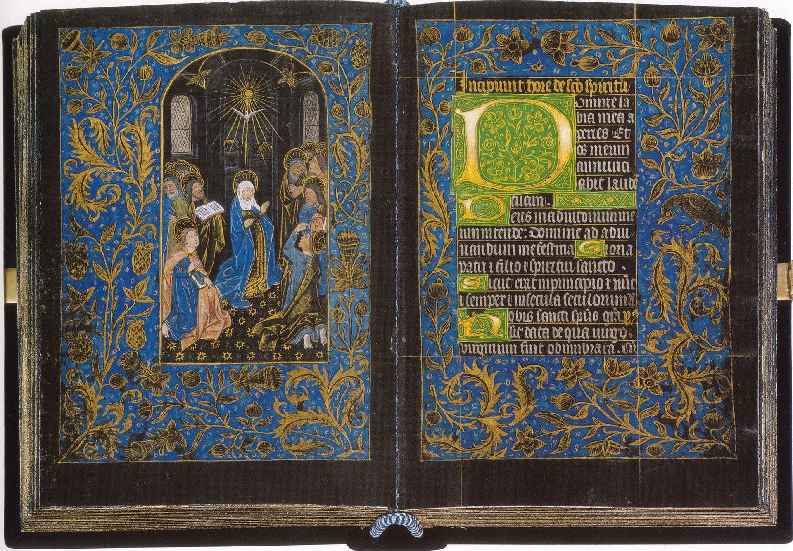
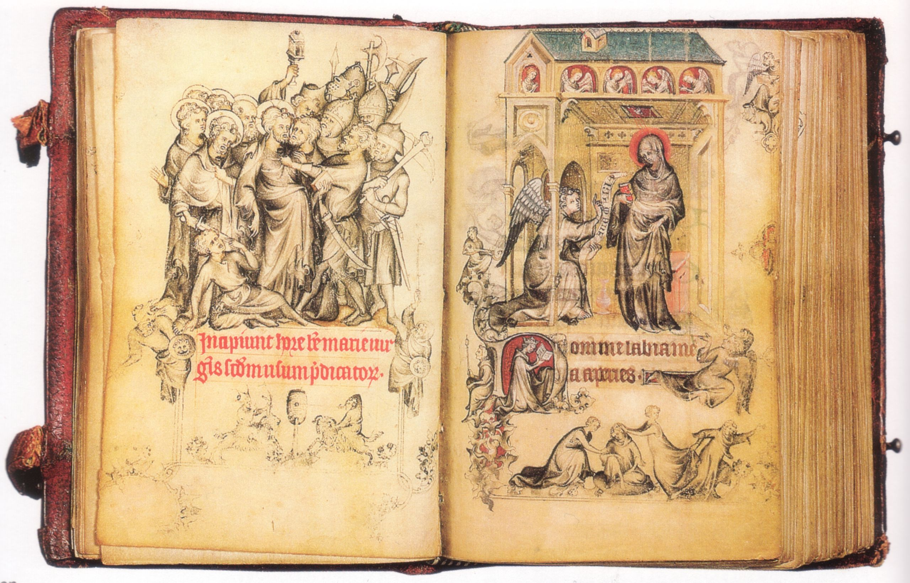
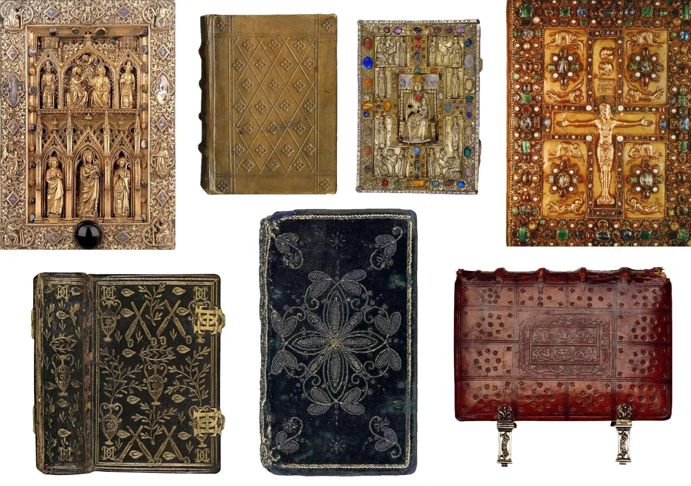
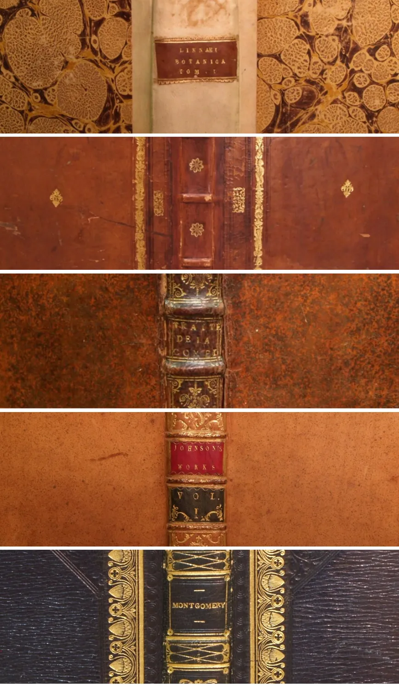
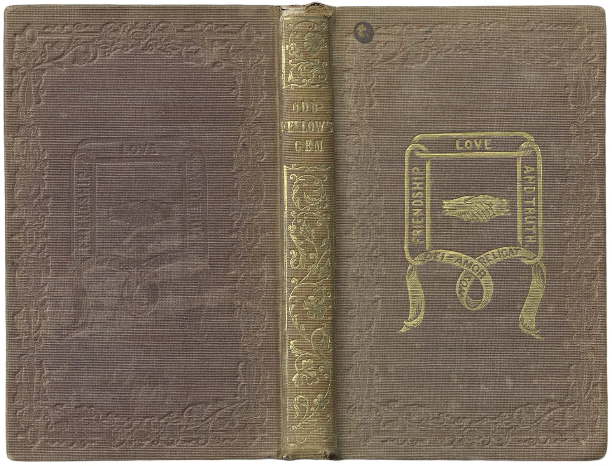
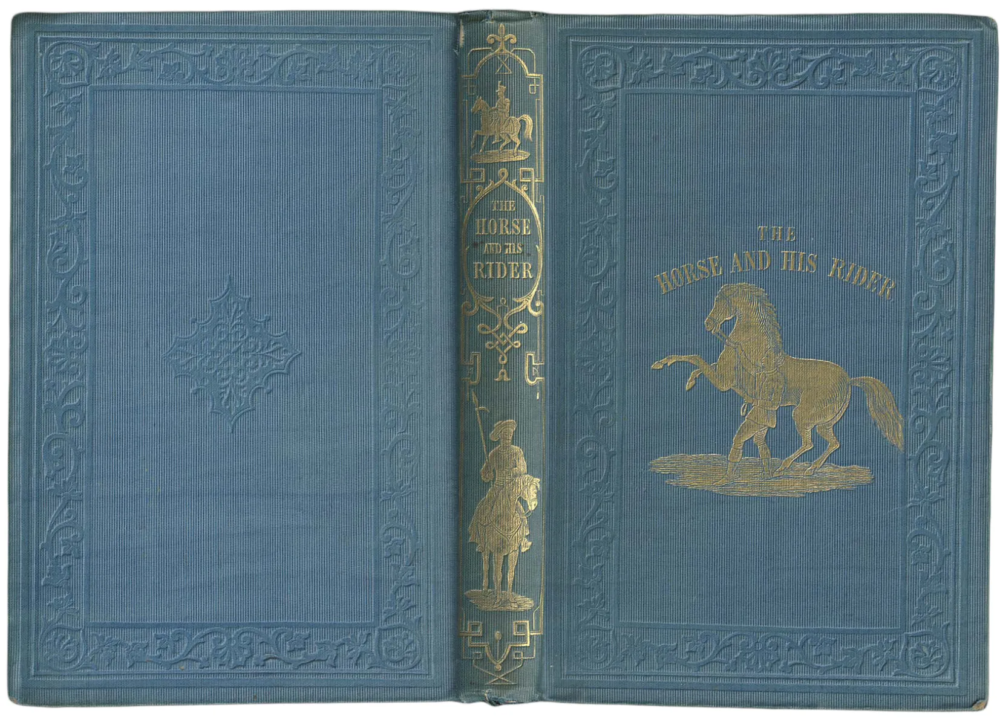
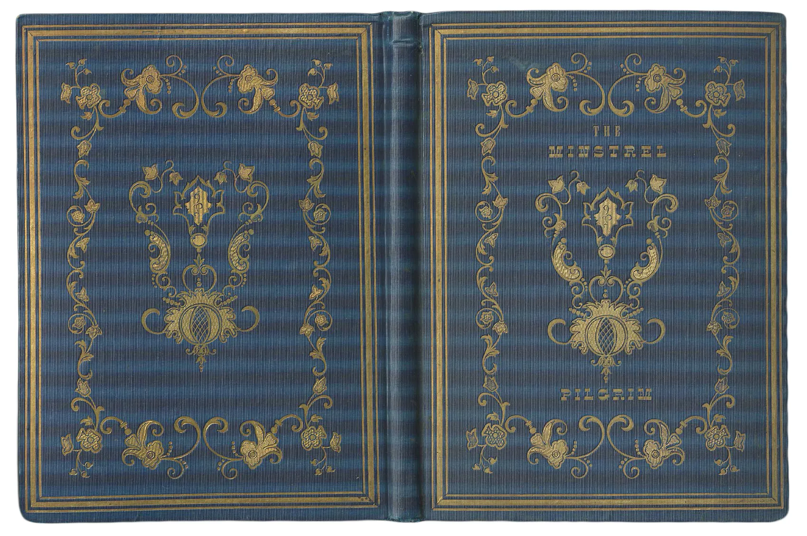
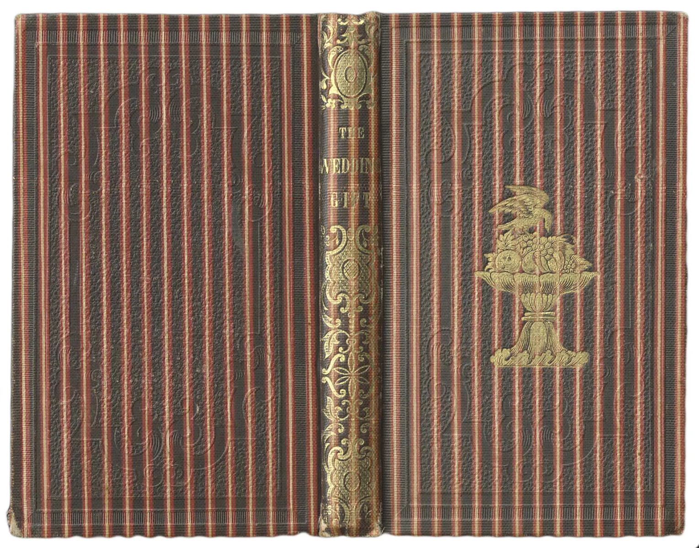

INTRO
As early as the 3rd century, papyrus rolls (volumen) from antiquity are now folded and assembled in codex. This radical change marks the birth of the book as we know it today, or almost. The book is the cover to protect and enhance it. But it will take time to go from precious stone inlays to polychrome prints! A few centuries and several wars, to be precise.
Middle Ages The treasure book
Antiquity
Until the early 1800s, and particularly during the Middle Ages or the
Renaissance, the book was a precious object for two reasons: its
content and its form. First, it contains almost exclusively sacred
texts: the holy word, a religious treasure, is reserved for monks. You
might as well say that we rarely had a Bible on our bedside table at
home - besides, between us, we still had to know how to read.
If we
take into account the fact that before 1450 each line was handwritten,
decorated with gold illuminations, and that the covers are works of
art in their own right, we understand better why its form was as
precious as its content.
Before, book "covers" looked like this:
hand-engraved or embossed bindings, precious stones, ivory, silk,
clasps, embroidery, leather, and gold and silver threads. The kind of
book that it would be a little hard to slip into your handbag in the
subway (see large by clicking on the picture).
The book was at the
time a medium reserved for scholars, which was consulted on the spot
and passed on like a treasure, solidly protected to last over the
years.

Top and Bottom: Book of Hours of Jeanne d'Evreux: Arrest of Jesus and Annunciation
The book of hours is a Christian devotional book popular in the Middle Ages. It is the most common type of surviving medieval illuminated manuscript. Like every manuscript, each manuscript book of hours is unique in one way or another, but most contain a similar collection of texts, prayers and psalms, often with appropriate decorations, for Christian devotion.

1450 The Printing Revolution
With the invention of lead movable type printing by this dear Gutenberg in 1450, we see the appearance of more and more books a little less precious, with embossed leather covers. Less time, less manpower, more books!
We pass from 15 000 000 printed books in Europe at the dawn of the invention of Gutenberg to more than 200 000 000 books a century later, and 1 000 000 000 printed books in the 18th century (that makes a lot of zero). Thanks to Wikipedia who teaches us a lot about the history of printing. Even if we are still far from the paperback books which will appear 500 years later (sorry for the spoil), it is well the revolution at the time.

16th - 19th centuries My Binder is Rich
At the time and until the 19th century, a book was bought uncovered with only a temporary seam, and wrapped in paper. The buyer has it assembled and bound by a specialist, where he can choose his "style": all leather, paper, gold gilt edge, touch of red and embossed... according to his budget. The book still remains a very beautiful object which does not throne on all the shelves, and on which the purchaser can afford some fantasies.
Below is an example of leather binding from the late 16th century. There are lots of pictures of old books to discover on the Michigan State University Library site, if you want to see even more leather.
In the 17th and 18th centuries, leather binding with a golden edge, sometimes with touches of blue or red, was given pride of place. The use of marbled paper is gradually being introduced to reduce costs and enhance aesthetics. Books are more sophisticated but increasingly easy to make; the work and binding techniques are simplified.
Here, book bindings between 1600 and 1820 (the last, blue, marks the change of century and technique).

1820: the great revolution
Industrialization and lay literature: binding for all? (from 1820)
From 1820, printers included binding in the manufacture of the book itself. No need to go through a specialist. With presses, they manage to create embossed textures with simple geometric patterns in monochrome, integrating a gold print. We play with the embosses to imitate the textures of the leather. Thanks to machines and presses, the book creation process is becoming simpler, faster and cheaper. Every decade, immense progress is made in terms of printing techniques.
From 1840, embossed or gold illustrations on fabric became more and more common to highlight the contents of the book, and the title gradually appeared on the front of the book, alone or in the middle of visuals. Fabric replaced leather, and by the end of the 19th century it had completely taken over the cover monopoly.
Below, typical covers of the years 1840 - 1855. One finds there fabric with various materials, the marking with gold and the appearance over the years of more and more complex illustrations.
The book is beautiful, it offers itself, and its cover no longer serves only to protect it; it also describes and illustrates its content. This is the birth of the cover.



